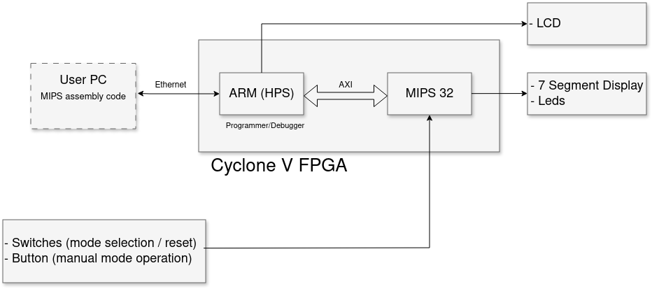
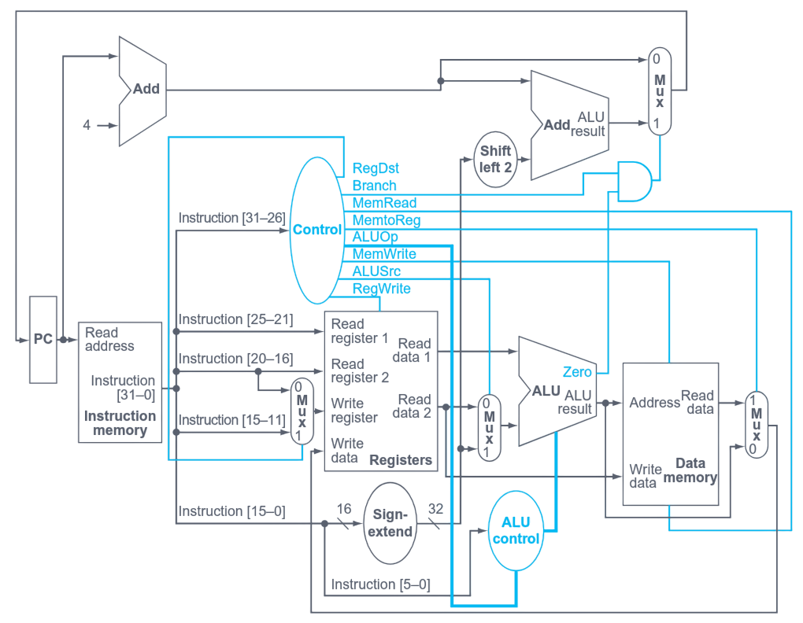
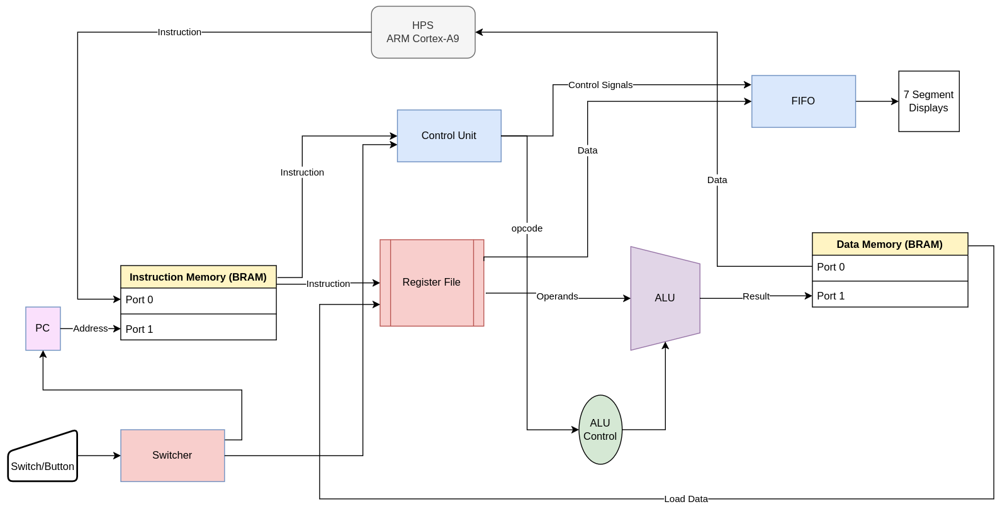
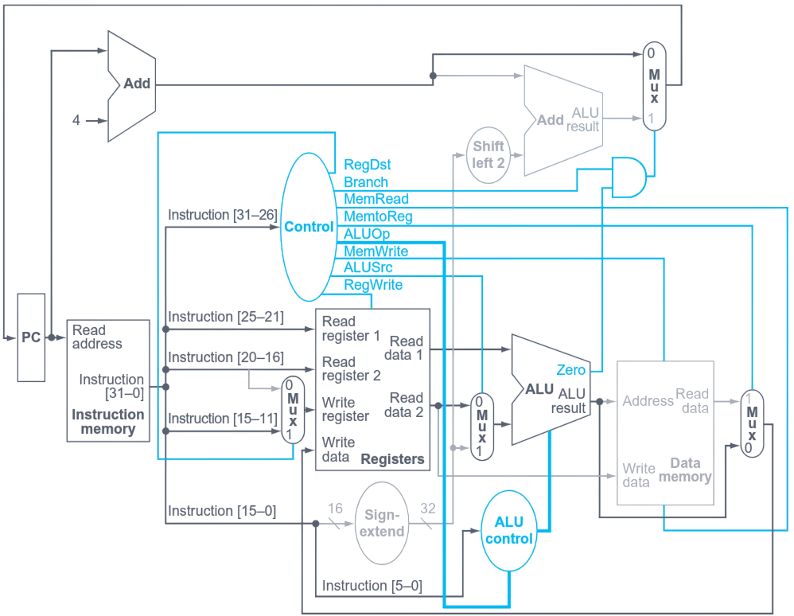
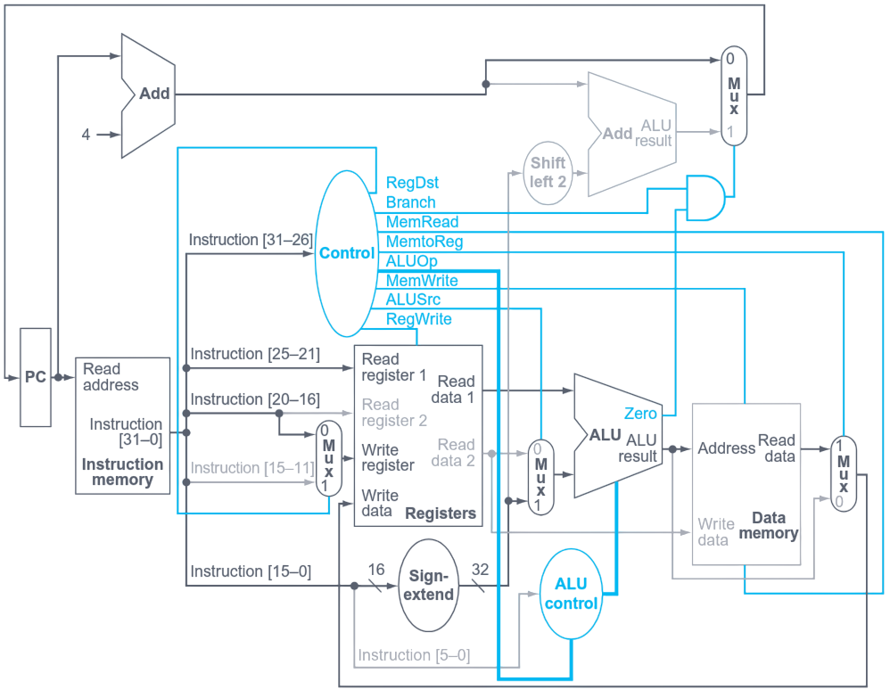
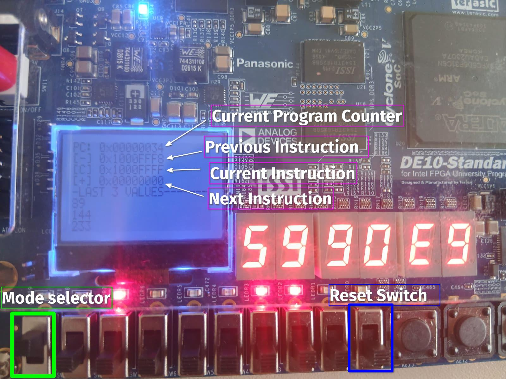
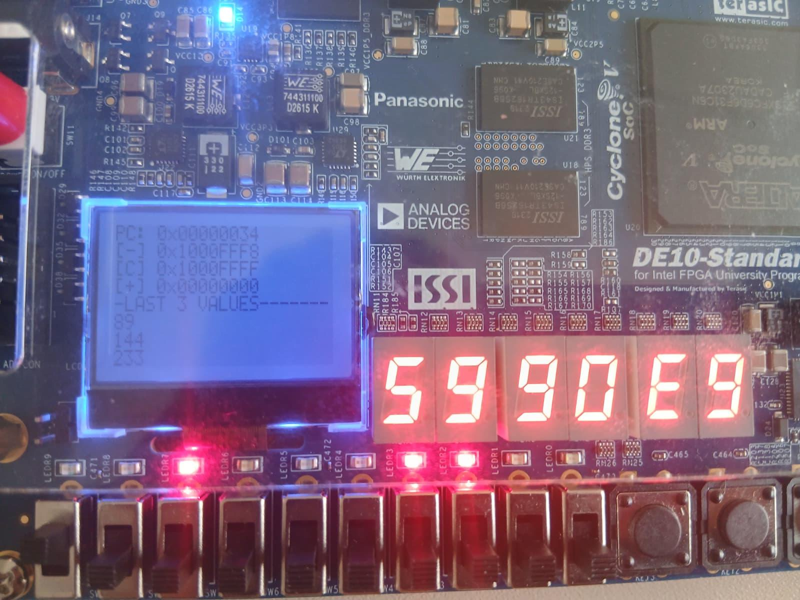
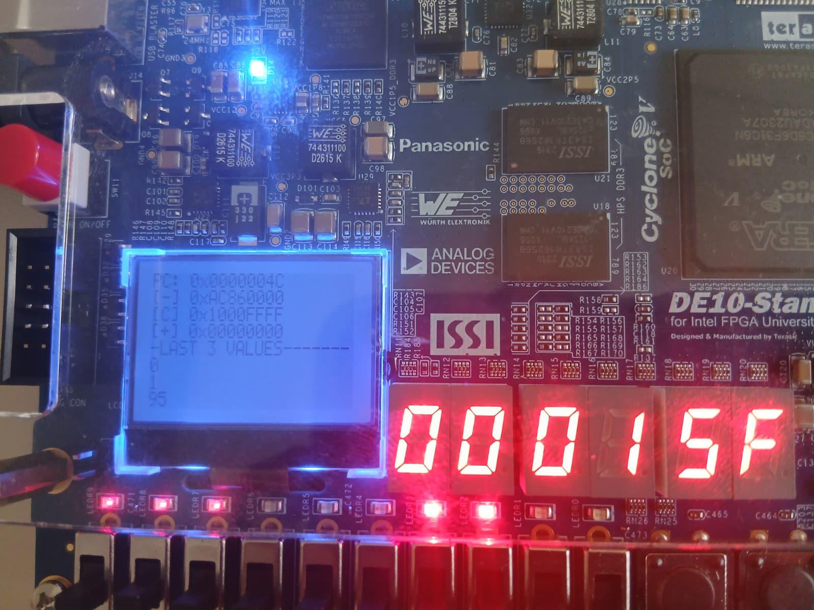
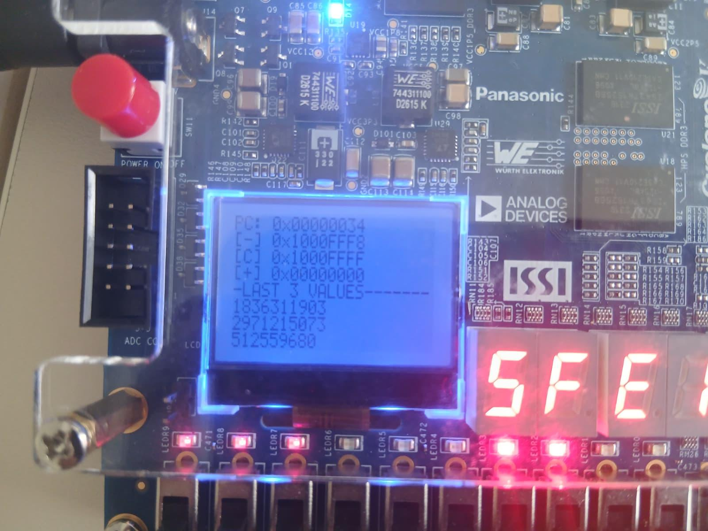

R-type: add $4, $0, $0
opcode | rs | rt | rd | shamt | funct 000000 | 00000 | 00000 | 00100 | 00000 | 100000 → 0x00002020
I-type: beq $0, $0, -1
opcode | rs | rt | immediate 000100 | 00000 | 00000 | 1111111111111111 → 0x1000FFFF
funct
| add | 100000 | 0x20 |
| sub | 100010 | 0x22 |
| and | 100100 | 0x24 |
| or | 100101 | 0x25 |
| slt | 101010 | 0x2A |
opcode
| lw | 100011 | 0x23 |
| sw | 101011 | 0x2B |
| addi | 001000 | 0x08 |
| beq | 000100 | 0x04 |






lw $t0, 0($t1) add $t2, $t0, $t3 # $t0 not ready!
| Concern | Pipeline | Staged |
|---|---|---|
| Data (RAW) | Forwarding/stalling | Serialization |
| Control | Delay slot/prediction | No delay slot |
| Control timing | Combinational critical | Same |
First, synthesize the design and generate the bitstream:
make fpga-build
Then program the FPGA fabric through JTAG:
make fpga-flash
For the Fibonacci demo:
python3 scripts/assembler.py scripts/fibo.asm -o scripts/program.hex
For the ISA validation demo:
python3 scripts/assembler.py scripts/isa.asm -o scripts/program.hex
The actual deployment commands are:
scp software/flasher/flasher.c cyclone:~/scripts/
scp scripts/program.hex cyclone:~/scripts/
ssh cyclone "gcc ~/scripts/flasher.c -o ~/scripts/flasher -std=gnu99"
The equivalent Make target is:
make flasher_deploy
Once the flasher and program.hex are on the board, the HPS loads the instruction BRAM:
ssh cyclone "~/scripts/flasher ~/scripts/program.hex"
The equivalent Make target is:
make flasher_run
Several observation methods are available after flashing:
make fibo-read make lcd_run
Start from:
python3 scripts/assembler.py scripts/fibo.asm -o scripts/program.hex make flasher_deploy make flasher_run
Then show one of the observation paths:
make fibo-read
or
make lcd_run
Generate the machine code:
python3 scripts/assembler.py scripts/isa.asm -o scripts/program.hex
Deploy and flash it:
make flasher_deploy make flasher_run
Then inspect the result with the same tools:
make fibo-read make lcd_run